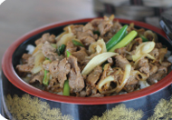
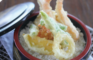
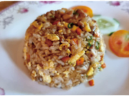
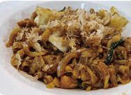
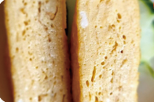
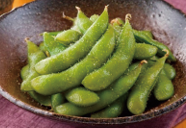
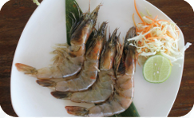
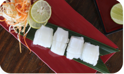

Gyudon
85K
A comforting Japanese rice bowl topped with tender sliced beef simmered in a sweet and savory soy-based sauce. Served with caramelized onions for deep umami flavor.
Order Now

Tori Katsudon
75K
Crispy chicken katsu simmered with soft onions and eggs over warm steamed rice. A perfect balance of crunchy, savory, and comforting flavors.
Order Now

Chicken Teriyaki Don
75K
Grilled chicken glazed with a rich, sweet teriyaki sauce served on a bowl of fluffy rice. Light, flavorful, and a favorite among visitors.
Order Now

Tendon
85K
A hearty selection of crispy tempura served over Japanese rice. The mix of textures and umami sauce creates a satisfying meal.
Order Now

Tekkadon
95K
A classic tuna sashimi rice bowl featuring fresh slices of tuna over seasoned rice. Light, refreshing, and perfect for seafood lovers.
Order Now

Torigara Katsu Ramen
85K
A warm chicken-based broth paired with crispy chicken katsu. Rich, flavorful, and comforting for any ramen enthusiast.
Order Now

Tempura Shoyu Ramen
75K
Light soy-flavored ramen topped with crispy shrimp tempura. A combination of delicate broth and crunchy tempura.
Order Now

Beef Shoyu Ramen
85K
Savory soy broth paired with tender sliced beef. A comforting bowl with deep, satisfying flavors.
Order Now

Chicken Katsu Curry Ramen
85K
A fusion delight combining curry seasoning and hearty ramen noodles, topped with crunchy chicken katsu. Bold and aromatic.
Order Now

Chicken Aburasoba
75K
A brothless noodle dish coated in savory Japanese oil-based sauce, paired with tender chicken. Rich but surprisingly light.
Order Now

Beef Tantanmen
85K
Spicy and creamy broth with minced beef, inspired by Sichuan flavors. A perfect balance between heat and richness.
Order Now

Chicken Tantanmen
75K
A mildly spicy noodle bowl featuring ground chicken in a creamy broth. Flavorful and comforting without being too spicy.
Order Now

Vegan Tantanmen
75K
A plant-based version of the popular tan-tan noodles, featuring creamy broth and hearty vegetables. Full flavor without any meat.
Order Now

Vegan Shoyu Ramen
70K
A light soy-based ramen made entirely with plant ingredients. Clean, refreshing, and perfect for vegan diners.
Order Now

Vegan Curry Ramen
75K
Comforting curry-flavored ramen with fresh vegetables and chewy noodles. A warm and satisfying vegan option.
Order Now

Vegan Aburasoba
75K
Brothless vegan noodles tossed in savory sauce with vegetables. Simple, aromatic, and delicious.
Order Now

Chahan
45K
Japanese-style fried rice with a light seasoning and aromatic vegetables. A simple yet flavorful classic.
Order Now

Yakisoba
55K
Stir-fried noodles with sweet-savory sauce and mixed vegetables. A popular street-style dish with bold flavors.
Order Now

Ebi Tempura
55K
Lightly battered shrimp fried to crispy perfection. Served with dipping sauce for the perfect bite.
Order Now

Tempura Moriawase
60K
A mixed assortment of crispy tempura vegetables and shrimp. Ideal for sharing or enjoying alone.
Order Now

Vegan Tempura
50K
Crispy battered vegetables fried to golden perfection. A delicious vegan-friendly tempura option.
Order Now

Chicken Karaage
45K
Japanese-style fried chicken marinated in soy, ginger, and garlic. Juicy inside, crispy outside.
Order Now

Chicken Gyoza
40K
Pan-fried dumplings filled with seasoned chicken and vegetables. Soft, crispy, and full of flavor.
Order Now

Agedashi Tofu
35K
Crispy fried tofu served in a warm soy-dashi broth. Soft, delicate, and deeply comforting.
Order Now

Tamagoyaki
35K
A fluffy Japanese rolled omelette with a slightly sweet flavor. Light and perfect as a side dish.
Order Now

Edamame
20K
Steamed young soybeans lightly salted. A healthy and refreshing appetizer.
Order Now

Wakame Salad
25K
A refreshing seaweed salad with sesame dressing. Light, crunchy, and full of minerals.
Order Now

Kyuri Salad
25K
Cucumber salad with tangy Japanese-style dressing. Cool, crisp, and refreshing.
Order Now

Tuna Tataki
75K
Lightly seared tuna slices served with citrus soy dressing. Fresh, aromatic, and full of character.
Order Now

US Short Plate
120K
Premium beef slices with rich marbling for a tender, juicy grill experience. Perfect for meat lovers.
Order Now

Chicken Breast
55K
Lean grilled chicken breast seasoned with Japanese spices. Simple, healthy, and flavorful.
Order Now

Prawn
55K
Fresh prawns prepared the Japanese way for a sweet, tender bite. A great seafood addition.
Order Now

Squid
55K
Grilled squid with a lightly smokey flavor and tender texture. Perfect for seafood fans.
Order Now

Yasai Harumaki
35K
Vegetable spring rolls with crunchy filling and golden crispy skin. A light and tasty snack.
Order Now